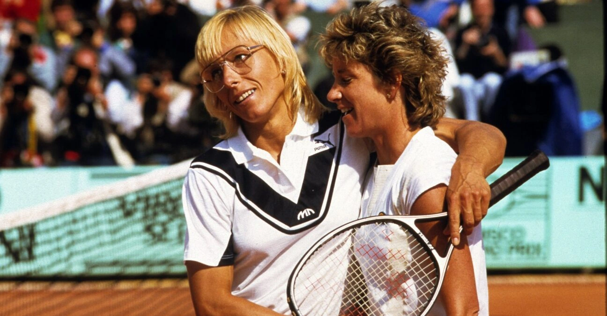
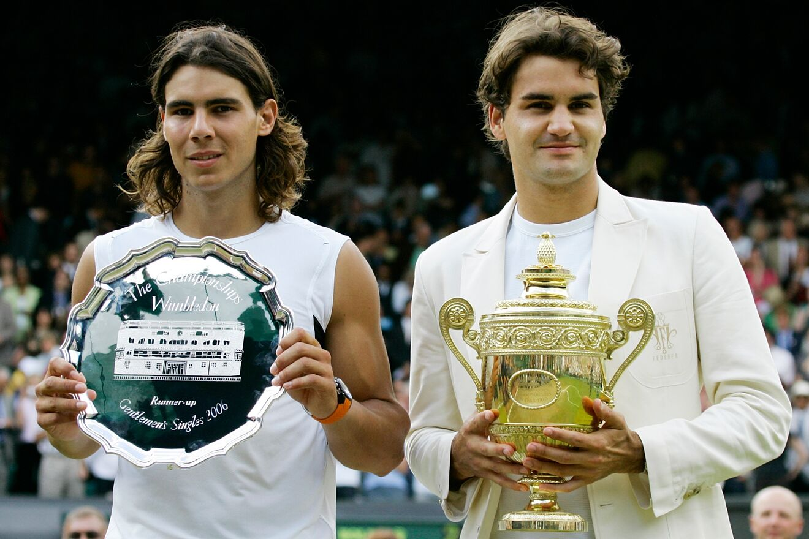
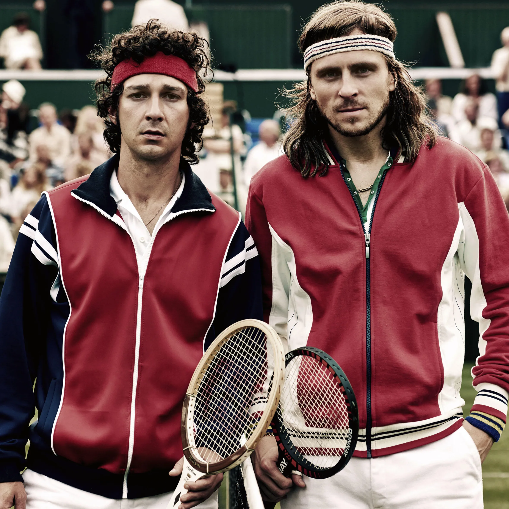

Jump to Content
Jump to Content
Iconic Tennis Rivalries
Tennis is a sport that has produced some of the greatest rivalries in sporting history. From the epic battles between Bjorn Borg and John McEnroe to the modern-day rivalry between Rafael Nadal and Roger Federer, tennis fans have been treated to some unforgettable matches. One of the greatest rivalries in tennis history was between Pete Sampras and Andre Agassi. The two Americans dominated the sport in the 1990s, with Sampras winning 14 Grand Slam titles and Agassi winning eight. Their contrasting styles and personalities made for an enthralling rivalry that captivated fans all over the world.
Another legendary rivalry in tennis was between Martina Navratilova and Chris Evert. The two women played each other 80 times between 1973 and 1988, with Navratilova winning 43 of those matches.  Navratilova's serve and volley game was a perfect counter to Evert's baseline game, and the two women played some of the most exciting matches in the history of the sport. Their rivalry helped to raise the profile of women's tennis and inspire a generation of young female players.
Perhaps the most iconic tennis rivalry of all time is between Roger Federer and Rafael Nadal. The two players have met on 40 occasions, with Nadal winning 24 of those matches. Their contrasting styles of play, with Federer's elegant serve and volley game and Nadal's relentless baseline play, have produced some of the most memorable matches in tennis history. Their rivalry has transcended the sport and has become a symbol of sportsmanship and mutual respect.
Another classic tennis rivalry was between Bjorn Borg and John McEnroe. The two players met 14 times between 1978 and 1981, with each player winning seven matches.  Their contrasting personalities, with Borg's stoicism and McEnroe's fiery temper, made for an entertaining spectacle on the court. Their matches were often closely fought and packed with drama, with the 1980 Wimbledon final, widely regarded as one of the greatest matches in tennis history, being a standout example.
In conclusion, tennis has produced some of the most iconic and memorable rivalries in the history of sport. The likes of Sampras vs Agassi, Navratilova vs Evert, Federer vs Nadal, and Borg vs McEnroe are etched into the annals of tennis history and have provided fans with some unforgettable moments. While each rivalry was unique, they all shared a common theme - two great champions battling it out for the right to be called the best.